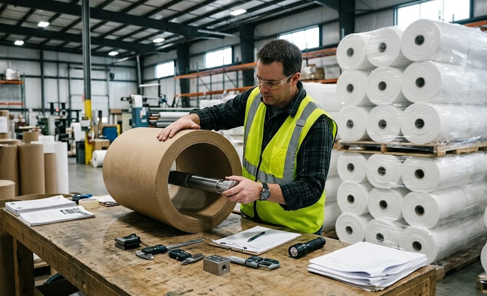
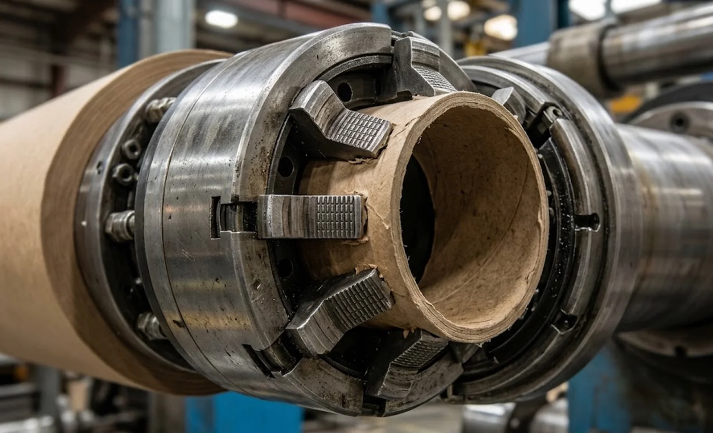

Published October 14, 2026 | By HDPTH Technical Editorial Team

When a roll telescopes, when hardness varies around the circumference, or when a core spins inside the first wraps, the investigation usually starts at the winder and ends at the core. Cores arrive by the thousand, so few buyers write a real specification for them — yet the core determines how the first wraps seat, how torque transfers from chuck to roll, and how much radial pressure the foundation survives. For a machine investment measured in six figures, the cheapest component deserves more engineering attention than it gets.
The dimensions that decide chuck grip
Inside diameter is the critical number. On the ubiquitous 76.2 mm (3 inch) core, chucks — pneumatic lug shafts, expanding chucks, differential-shaft core chucks — are engineered to grip a narrow ID band. Too loose and the core slips under torque, printing periodic patterns into the roll and eventually telescoping it; too tight and the chuck distorts the core, and with it the first wraps. A practical tolerance is about +0.3/−0.0 mm on ID. Length within ±1 mm keeps the roll face aligned and maintains nip contact on surface winders. Straightness within about 1 mm over full length matters because a bowed core creates hard and soft bands in the first layers that persist outward; our guide on core size and finished roll diameter covers how core choice also interacts with roll stiffness. Roundness and wall thickness uniformity complete the picture for high-torque center winding, where an oval core pumps the tension loop once per revolution.
Crush strength, moisture and the winding envelope
Crush failure looks dramatic — a collapsed core, a scrapped roll — but the warning signs are subtle: hard rings near the core, radial cracking inside the ID, or a core that measures oval after unwinding. What crushes a core is radial pressure concentrated on the first wraps: high initial winding tension, an aggressive taper-tension profile, or web mass and line speed the core grade was never qualified for. The right fix is to ask the machine supplier for the winding envelope — tension range, torque profile, roll weight — and to buy a core grade whose crush strength clears it with margin. Moisture is the silent modifier: a core that absorbs humidity in a wet warehouse loses stiffness, so specify moisture content at delivery and storage rules at your plant. For lines winding sensitive materials, this pairs with the environmental controls discussed in our humidity and climate control guide.
| Core parameter | Practical specification | Failure when ignored |
|---|---|---|
| Inside diameter | +0.3/−0.0 mm on 76.2 mm core | Chuck slip, telescoping, spun cores |
| Length | ±1 mm | Ragged roll faces, lost nip on surface winders |
| Straightness | ≤1 mm over full length | Hard/soft bands from the first wraps outward |
| Crush strength | Matched to winding envelope + margin | Collapsed cores, scrapped rolls |
| Moisture | Specified range + dry storage | Lost stiffness, dimensional drift |
| Plug / end-cap fit | Defined interference, no burrs | Shaft damage, handling failures |
Plugs, end caps and the interfaces nobody specs
Where plugs or end caps are used — common on heavy rolls and automated handling — their fit deserves the same rigour as the core body. Under-dimensioned plugs shear under roll weight; over-dimensioned ones split cores on insertion. Burrs on plug edges damage shaft surfaces and shed debris into the machine, and loose plugs migrate during handling. Define plug interference, material and edge condition in the same document as the core body — one specification, one inspection protocol, one point of accountability.

Qualifying a core producer and receiving inspection
Most converters qualify a local core producer for cost and supply security — a sensible arrangement if the producer is audited against the written specification. Require batch certificates covering ID, crush strength and moisture, run a simple receiving inspection on every lot (a calibrated plug gauge for ID, a straightedge and feeler for bow, a sample crush test per batch), and quarantine batches that fail. When a new web formulation changes the winding envelope, re-validate the core specification against it, as described in our material trial testing guide. Because rolls must survive wrapping, storage and shipping after the winder, coordinate core choice with our roll packaging guide so the whole downstream chain agrees on the same numbers.
Specifying your next slitter rewinder?
Tell HDPTH your material, roll weight and winding profile. We provide a written core specification matched to the machine’s tension and torque envelope, recommend receiving inspection protocols, and qualify your core supply with you — because the cheapest component in the line should never be the one that scrapes the most rolls.
Submit Your Project InquiryFrequently asked questions
What core tolerances matter most for slitter rewinding?
Inside diameter first: on a typical 76.2 mm core, hold ID within about +0.3/−0.0 mm so pneumatic and mechanical chucks grip without slip or forced distortion. Length tolerance within ±1 mm protects side alignment and surface winding contact, and straightness within about 1 mm over the full length prevents the first wraps from hard spots and periodic roll hardness variation. Roundness and wall uniformity matter most for high-torque center winding.
Why do cores collapse or crush during winding?
Crush comes from radial pressure on the first wraps exceeding the core’s crush strength: high initial winding tension, aggressive taper profiles, heavy web rolls, or a core that lost stiffness to moisture absorption. Fix it by matching the core grade to the winding program — ask the machine supplier for the torque and tension envelope the core must survive — rather than by quietly lowering tension and accepting softer, weaker rolls.
Should we buy cores from the machine supplier or a local producer?
Many converters qualify a local core producer for supply security and cost, which is reasonable — provided the producer is audited against a written specification covering ID/OD, length, straightness, crush strength and moisture. Ask the machine supplier for the receiving inspection protocol they recommend, run it on every incoming batch, and require core certificates so quality disputes can be resolved with data instead of blame.
How does core quality affect roll hardness and telescoping?
The first wraps on a core define the roll’s foundation: an out-of-round, damp or low-strength core produces hard and soft bands that persist through the entire roll, shows up in roll hardness profiles, and encourages telescoping when the chuck slips under torque. A core that is dimensionally stable gives the winding program a consistent base, which is why hardness problems at the inside diameter often trace back to the core, not the winder.
What core specifications should appear in the purchase contract?
ID and wall thickness tolerances, length tolerance, straightness limit, minimum crush strength, moisture content range, material grade and recycled-content expectation, plug or end-cap fit if used, plus the receiving inspection method and batch certificate requirement. Attach the machine supplier’s core specification as an annex so your core producer, the converter and the machine builder all work from the same numbers.